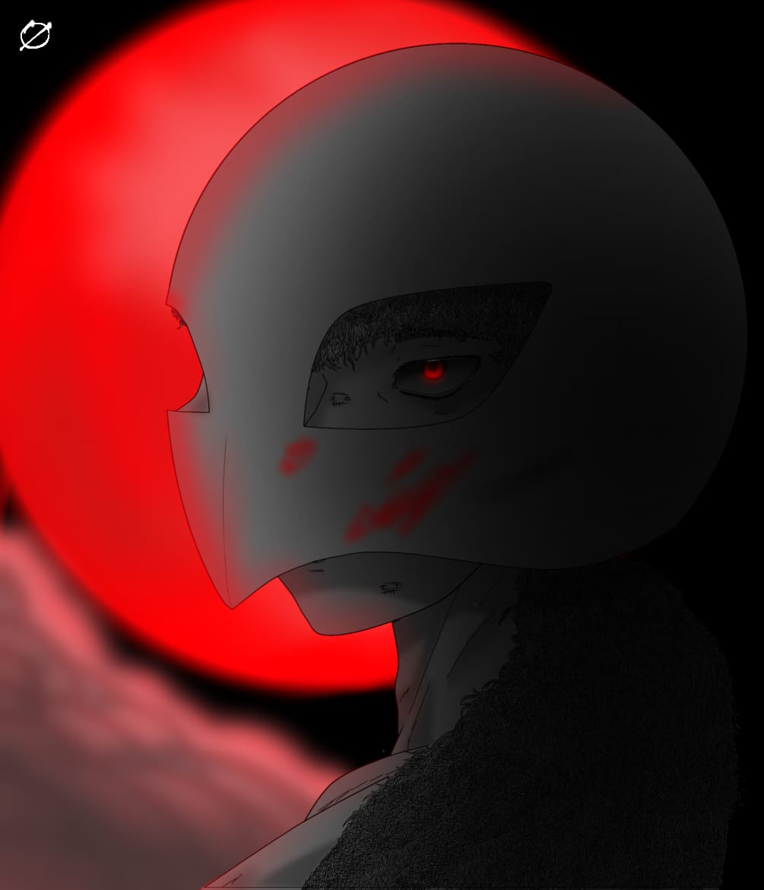

Essa obra digital foi feita em meados de 2022. Nesse periodo o artista estava gostando
de gore e drama, uma boa histora
Obra: Griffith, coração podre
Griffith
Obra: Link.S
Link Sans
Obra: Nezuko.K
Nezuko